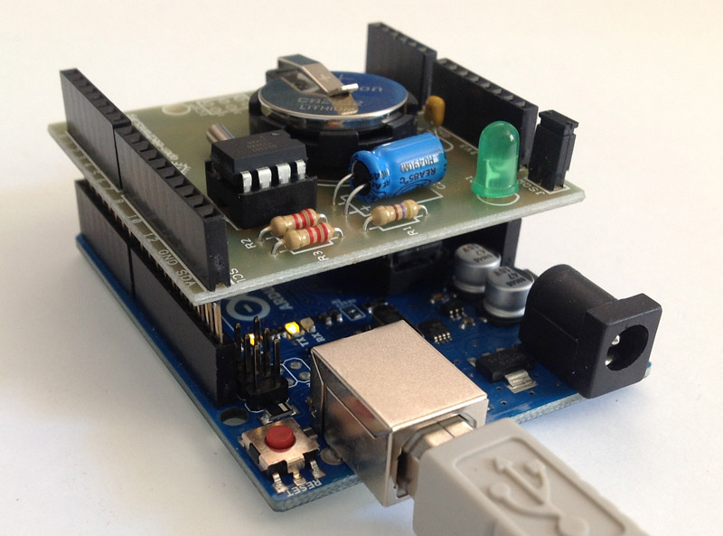

Basata sull’integrato DS1307 della Maxim-Dallas, questa shield per Arduino consente di avere un preciso orologio di sistema, sgravando la CPU dal calcolo e dalla gestione dei dati orari e liberando spazio nella memoria di programma, che può così essere utilizzata per scrivere il codice di altre applicazioni. L'integrato DS1307 è un contatore BCD (Binary Coded Decimal) a basso consumo, che conta secondi, minuti, ore, giorni, mesi e anni, provvisto di 56 byte di RAM statica non volatile. Può operare nelle modalità 12 o 24 ore, con indicazione delle ore antimeridiane (AM) e di quelle pomeridiane (PM). Le informazioni sull’ora e la data vengono collocate in un apposito registro e trasferite al microcontrollore di Arduino mediante l’I²C-bus. Per conoscere l’ora e la data, Arduino deve interrogare il DS1307 mediante l’I²C-bus; allo scopo occorre implementare un semplicissimo sketch che attivi un I²C-Bus.

#include <Wire.h>
#include "RTClib.h"
RTC_DS1307 RTC;
void setup () {
Serial.begin(57600);
Wire.begin();
RTC.begin();
RTC.sqw(1); //0 Led off - 1 Freq 1Hz - 2 Freq 4096kHz - 3 Freq 8192kHz - 4 Freq 32768kHz
//following line sets the RTC to the date & time this sketch was compiled
//RTC.adjust(DateTime(uint16_t(2014), (uint8_t)06, (uint8_t)18, (uint8_t)11, (uint8_t)25,(uint8_t)0));
}
void loop () {
DateTime now = RTC.now();
Serial.print(now.year(), DEC);
Serial.print('/');
Serial.print(now.month(), DEC);
Serial.print('/');
Serial.print(now.day(), DEC);
Serial.print(' ');
Serial.print(now.hour(), DEC);
Serial.print(':');
Serial.print(now.minute(), DEC);
Serial.print(':');
Serial.print(now.second(), DEC);
Serial.println();
delay(1000);
}